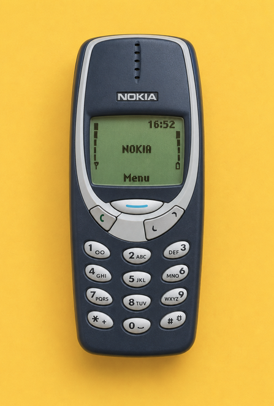

Clase 8: Práctica adicional
1 Anagramas
Implemente una función que recibe una lista de strings y agrupe en sublistas aquellas palabras que sean anagramas entre sí.
La función debe devolver una lista de listas, donde cada sublista contenga todas las palabras que pertenecen al mismo grupo de anagramas. El orden de los grupos en la salida puede ser arbitrario y puede asumir que las palabras no se repiten.
Dos cadenas se consideran anagramas si contienen exactamente los mismos caracteres, aunque en un orden diferente.
Ejemplos
>>> palabras = ["roma", "amor", "ramo", "casa", "saco", "caso", "roca", "saca"]
>>> encontrar_anagramas(palabras)
[['roma', 'amor', 'ramo'], ['casa', 'saca'], ['saco', 'caso'], ['roca']]>>> palabras = ["abc"]
>>> encontrar_anagramas(palabras)
[['abc']]2 Filtros
Implemente una función filtrar(secuencia, *filtros) que reciba una secuencia (por ejemplo una lista, o una lista de diccionarios) y una cantidad arbitraria de filtros (funciones). La función debe devolver una sub-secuencia con los elementos que cumplen todos los filtros.
Si no se reciben filtros, devuelva la secuencia original.
Ejemplos
>>> datos = [1, 2, 3, 4, 5, 6, 7, 8, 9]
>>> filtrar(datos, lambda x: x % 2 == 0, lambda x: x > 4)
[6, 8]
>>> personas = [
... {"nombre": "Ana", "edad": 19},
... {"nombre": "Luis", "edad": 25},
... {"nombre": "Eva", "edad": 25},
... ]
>>> filtrar(personas, lambda d: d["edad"] == 25)
[{'nombre': 'Luis', 'edad': 25}, {'nombre': 'Eva', 'edad': 25}]3 Miembros
Implemente una clase Miembro y una clase derivada MiembroPremium que representan usuarios de un sistema que gestiona créditos y consumos de películas.
Miembro se inicializa con un nombre de usuario y opcionalmente un saldo, que por defecto es 0. Debe contar con las propiedades de solo lectura usuario, saldo e historial. Debe implementar un método cargar que incrementa el saldo en monto créditos, lanzando un ValueError cuando monto es menor o igual 0 y un método consumir que recibe el nombre del contenido y el costo asocaido al mismo. si el saldo es suficiente, descuenta el costo y agrega el contenido al historial. Si no, arroja un ValueError.
Por su parte, la clase MiembroPremium modifica el comportamiento de Miembro para que se otorgue un 20% de descuento sobre el costo original a la hora de realizar consumos.
Ejemplo
>>> m = Miembro("Ana", 100)
>>> m.cargar(20)
>>> m.consumir("Película A", 80)
>>> m.saldo
40
>>> m.consumir("Película A", 80)
ValueError("¡Saldo insuficiente!")
>>> m.historial
["Película A"]
>>> p = MiembroPremium("Luis", 160)
>>> p.consumir("Película A", 80)
>>> p.saldo
96
>>> p.cargar(-1)
ValueError("No se puede cargar saldo negativo")4 Primera aparción
Implemente una función que reciba dos cadenas, cadena y subcadena, y devuelva el índice de la primera aparición de subcadena dentro de cadena.
Si subcadena no aparece dentro de cadena, la función debe devolver -1.
Ejemplos
>>> buscar_subcadena("programacion", "grama")
3>>> buscar_subcadena("casa", "sol")
-15 Biblioteca
Implemente una clase Libro, una clase Socio y una clase Biblioteca.
Libro se inicializa con un titulo y un autor. Debe contar con las propiedades de solo lectura titulo, autor y prestado. Inicialmente, prestado vale False.
Socio se inicializa con un nombre y opcionalmente un max_prestamos, que por defecto es 2. Debe contar con las propiedades de solo lectura nombre y libros_prestados. La propiedad libros_prestados debe devolver una copia de la lista interna.
Biblioteca se inicializa con un nombre. Debe contar con las propiedades de solo lectura nombre, libros y socios. Las propiedades libros y socios deben devolver una copia de las colecciones internas.
La clase Biblioteca debe implementar estos métodos:
agregar_libro(libro): agrega un libro al catálogo.registrar_socio(socio): agrega un socio a la biblioteca.prestar_libro(libro, socio): presta un libro a un socio. Debe lanzar unValueErrorsi el libro no pertenece al catálogo, si el socio no está registrado, si el libro ya está prestado o si el socio alcanzó su máximo de préstamos.devolver_libro(libro, socio): devuelve un libro prestado. Debe lanzar unValueErrorsi el libro no pertenece al catálogo, si el socio no está registrado o si el socio no tenía ese libro.
Cuando un préstamo se realiza correctamente, el libro pasa a estar prestado y se agrega a la lista de libros prestados del socio. Cuando se devuelve, ocurre lo contrario.
Ejemplos
>>> libro1 = Libro("El principito", "Saint-Exupéry")
>>> libro2 = Libro("1984", "George Orwell")
>>> libro3 = Libro("Rayuela", "Julio Cortázar")
>>> socio1 = Socio("Ana")
>>> socio2 = Socio("Luis")
>>> biblioteca = Biblioteca("Municipal")
>>> biblioteca.agregar_libro(libro1)
>>> biblioteca.agregar_libro(libro2)
>>> biblioteca.registrar_socio(socio1)
>>> biblioteca.prestar(libro1, socio1)
>>> libro1.prestado
True
>>> [libro.titulo for libro in socio1.libros_prestados]
["El principito"]
>>> biblioteca.prestar(libro1, socio1)
ValueError("No se puede prestar el libro")
>>> biblioteca.prestar(libro2, socio1)
>>> [libro.titulo for libro in socio1.libros_prestados]
["El principito", "1984"]
>>> biblioteca.prestar(libro3, socio1)
ValueError("El libro no pertenece al catálogo")
>>> biblioteca.prestar(libro1, socio2)
ValueError("El socio no está registrado")
>>> biblioteca.registrar_socio(socio2)
>>> biblioteca.prestar(libro2, socio2)
ValueError("El libro ya está prestado")
>>> biblioteca.devolver(libro1, socio1)
>>> libro1.prestado
False
>>> [libro.titulo for libro in socio1.libros_prestados]
["1984"]
>>> biblioteca.devolver(libro1, socio1)
ValueError("El socio no tenía prestado ese libro")Punto extra
Modifique la clase Biblioteca para que dos bibliotecas puedan prestarse libros entre sí.
Para ello, implemente un método que permita que una biblioteca solicite un libro a otra y lo incorpore temporalmente a su catálogo. Una vez hecho esto, el libro podrá ser prestado a uno de sus socios utilizando las mismas reglas definidas anteriormente.
Tenga en cuenta que un socio solo puede solicitar libros en la biblioteca en la que se encuentra registrado. Es decir, si un libro pertenece al catálogo de otra biblioteca, primero debe producirse el préstamo entre bibliotecas y recién luego podrá prestarse al socio.
>>> libro1 = Libro("Ficciones", "Jorge Luis Borges")
>>> socio1 = Socio("Ana")
>>> biblioteca1 = Biblioteca("Biblioteca Norte")
>>> biblioteca2 = Biblioteca("Biblioteca Sur")
>>> biblioteca2.agregar_libro(libro1)
>>> biblioteca1.registrar_socio(socio1)
>>> biblioteca1.prestar(libro1, socio1)
ValueError("El libro no pertenece al catálogo")
>>> biblioteca1.solicitar_libro(libro1, biblioteca2)
>>> biblioteca1.prestar(libro1, socio1)
>>> [libro.titulo for libro in socio1.libros_prestados]
["Ficciones"]6 Intervalos superpuestos
Implemente una función que reciba una lista de intervalos intervalos, donde cada elemento tenga la forma [inicio, fin], y devuelva una nueva lista en la que todos los intervalos superpuestos hayan sido unidos.
La función debe devolver una lista de intervalos sin superposiciones que cubra exactamente los intervalos de entrada.
Considere que dos intervalos también se consideran superpuestos cuando el final de uno coincide con el inicio del otro.
Ejemplos
>>> intervalos = [[1, 3], [2, 6], [8, 10], [15, 18]]
>>> unir_intervalos(intervalos)
[[1, 6], [8, 10], [15, 18]]>>> intervalos = [[1, 4], [4, 5]]
>>> unir_intervalos(intervalos)
[[1, 5]]>>> intervalos = [[4, 7], [1, 4]]
>>> unir_intervalos(intervalos)
[[1, 7]]Ayuda
Para resolver el problema, puede resultar útil ordenar previamente los intervalos de manera ascendente según su valor inicial:
>>> intervalos = [[4, 7], [1, 4], [8, 10], [2, 6]]
>>> sorted(intervalos, key=lambda intervalo: intervalo[0])
[[1, 4], [2, 6], [4, 7], [8, 10]]7 Combinaciones telefónicas
Implemente una función que reciba una cadena digitos, compuesta por caracteres entre 2 y 9, y devuelva todas las combinaciones de letras que ese número puede representar.
Cada dígito se asocia a un conjunto de letras, como ocurre en los botones de un teléfono celular. La función puede devolver las combinaciones en cualquier orden.
Puede asumir que la función se utilizará con cadenas formadas únicamente por dígitos entre 2 y 9.

Ejemplos
>>> combinar_letras("23")
['ad', 'ae', 'af', 'bd', 'be', 'bf', 'cd', 'ce', 'cf']>>> combinar_letras("2")
['a', 'b', 'c']>>> combinar_letras("243")
['agd', 'age', 'agf',
'ahd', 'ahe', 'ahf',
'aid', 'aie', 'aif',
'bgd', 'bge', 'bgf',
'bhd', 'bhe', 'bhf',
'bid', 'bie', 'bif',
'cgd', 'cge', 'cgf',
'chd', 'che', 'chf',
'cid', 'cie', 'cif']Ayuda
Para la resolución de este ejercicio, puede resultar útil representar la correspondencia entre cada dígito y sus letras asociadas mediante un diccionario:
mapa = {
"2": "abc",
"3": "def",
"4": "ghi",
"5": "jkl",
"6": "mno",
"7": "pqrs",
"8": "tuv",
"9": "wxyz",
}8 Entero a número romano 🧩
Implemente una función que reciba un número entero numero y devuelva su representación en numeración romana. Puede asumir que la función se utilizará con valores comprendidos entre 1 y 3999.
Los símbolos romanos y sus valores son:
| Símbolo | Valor |
|---|---|
| I | 1 |
| V | 5 |
| X | 10 |
| L | 50 |
| C | 100 |
| D | 500 |
| M | 1000 |
Los números romanos se forman de mayor a menor, concatenando los símbolos correspondientes. Tenga en cuenta las siguientes reglas:
- Existen casos de notación sustractiva:
IV,IX,XL,XC,CD,CM. - Solo
I,X,CyMpueden repetirse hasta 3 veces seguidas. V,LyDno se repiten.- Si un símbolo debería repetirse 4 veces, debe usarse la forma sustractiva.
La conversión debe realizarse por posiciones decimales y no combinando valores de manera arbitraria.
Ejemplos
>>> convertir_a_romano(3749)
'MMMDCCXLIX'En este caso:
3000 = MMM700 = DCC40 = XL9 = IX
>>> convertir_a_romano(58)
'LVIII'50 = L8 = VIII
>>> convertir_a_romano(1994)
'MCMXCIV'1000 = M900 = CM90 = XC4 = IV
Ayuda
Una forma conveniente de resolver este problema es construir una lista de pares (valor, simbolo) ordenada de mayor a menor, incluyendo también los casos especiales como 900, 400, 90, 40, 9 y 4.
Luego, puede recorrerse esa lista e ir restando del número el mayor valor posible mientras se agrega el símbolo correspondiente al resultado.
En otras palabras, cada vez que el número restante sea mayor o igual que uno de esos valores, puede agregarse el símbolo asociado y restarse dicho valor.
Por ejemplo, si el número es 58, una posible descomposición es:
50 = L5 = V3 = III